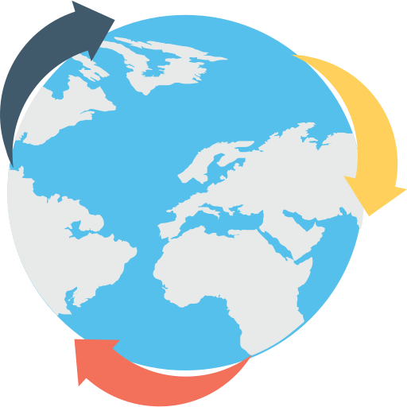
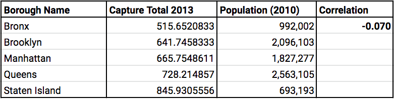
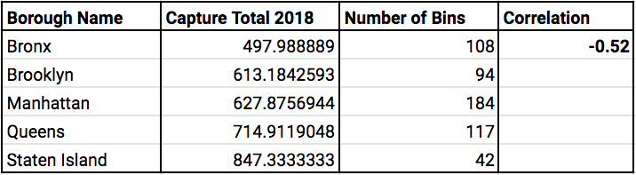
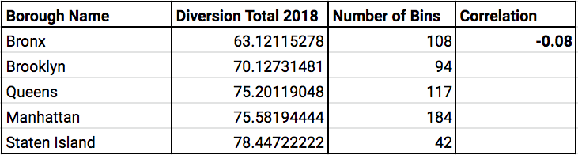

Project Description
Our goal for this project was to create different visualizations to help explore and determine the correlation, or lack thereof, between the amount of recycling collected in New York City and both the number of recycling bins and population size of any given district.

Research Questions
1. Is there a correlation between the number of recycling bins in a city borough and the volume of material collected for recycling?
2. Is the volume of material collected for recycling correlated to the population of the boroughs?
3. Is there a correlation between the number of recycling bins and the population size of a given district?
Definitions
Capture Rate Paper:Percentage of total Paper in the waste stream that is disposed of as recycling material.
Capture Rate MGP:Capture rate for Metal, Glass, and Plastic only.
Diversion Rate:Percentage of total solid waste collected that is disposed of as non-recycling, but converted to recycling waste after disposal.
Correlation Tables
Correlation of Capture and Diversion Rates by Population


Correlation of Capture and Diverstion Rates by Number of Bins


Bar Chart
This visualization displays the number of recycling bins in the city boroughs in relation to the total capture rate per borough. The height of the bars represents number of bins, and the color of each bar represents the capture rate.
Capture Rate
Heatmap with Recycling Bins
The most interactive visualization in the project, it displays a heatmap of various data types over the city's topography.
The default visualization displays a single heatmap of Diversion Rate for January 2013, with each recycling bin location punctuated in green.
Using the visualization control buttons, the user can choose to view heatmaps of Diversion Rate, Capture Rate of Paper, Capture Rate MGP, and Population Size. There is also the option to display the recycling bins or not over any heatmap. Additionally, the user can choose to view two maps side by side for further exploration. All the data can be filtered by month and year from January 2013 to December 2018.
Additional information is displayed for each district on hover such as the district's name as per the Department of Sanitation, the number of recycling bins on the district, and the exact value for the data being displayed on the heatmap.
Selection Tool